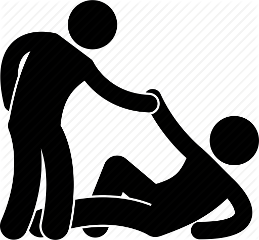
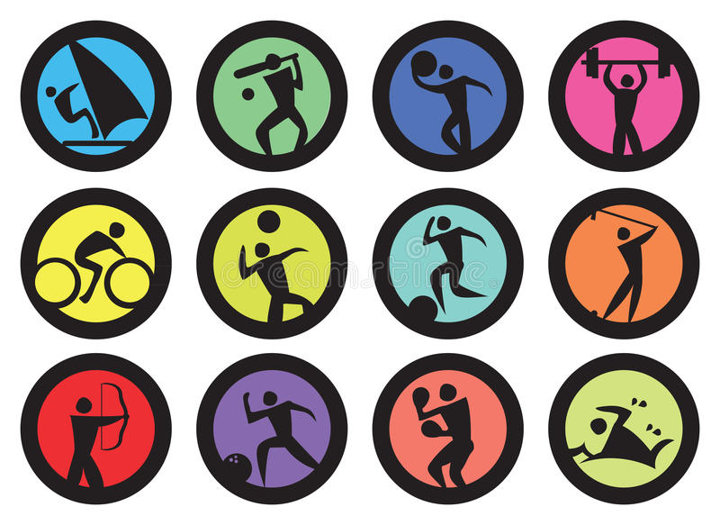
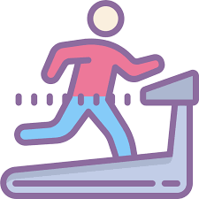

Look for support from people who make you feel safe and cared for.
- Talk to a person who will listen attentively and compassionately without judging you or getting distracted. Social media, texting, and phone calls are a great way to talk to someone and stay connected. But nothing beats talking to someone face to face.
(e.g. ask a loved one to check in with you regularly, Call or email an old friend)

- Often when you’re depressed, it feels more comfortable to retreat into your shell, but being around other people will make you feel less depressed.
(e.g. go with someone to the movies, a concert, or a small get-together, Go for a walk with a workout buddy, Schedule a weekly dinner date)

Research shows you get an even bigger mood boost from providing support yourself. So find ways—both big and small—to help others.
(e.g. volunteer, be a listening ear for a friend, do something nice for somebody)


- They can bring joy and companionship into your life and help you feel less isolated. Caring for a pet can also get you outside of yourself and give you a sense of being needed


- Being with others dealing with depression can go a long way in reducing your sense of isolation. You can also encourage each other, give and receive advice on how to cope, and share your experiences.


- You might be surprised at how much better you feel once you’re out in the world. Even if your depression doesn’t lift immediately, you’ll gradually feel more upbeat and energetic as you make time for fun activities.
(e.g.Pick up a hobby or sport; Express yourself through music, art, or writing; Go out with friends; watch a movie, read a book)


Sleep for at least 8 eight hours


- Figure out all the things in your life that stress you out, like work overload, money problems, or unsupportive relationships, and find ways to relieve the stress.

- Relieve symptoms of depression, reduce stress, and boost feelings of joy and well-being
(e.g. yoga, deep breathing, progressive muscle relaxation, or meditation)


- Will help you to feel energized and less fatigued
- Can keep you motivated
- Try rhythmic exercise like walking, weight training, swimming, martial arts, or dancing (where you move both your arms and legs)
- Sunlight can help boost serotonin levels and improve your mood. Whenever possible, get outside during daylight hours and expose yourself to the sun for at least 15 minutes a day.


What you eat has a direct impact on the way you feel
- Reduce the consumption of foods that can affect your mood, such as caffeine, alcohol, trans fats, and foods with high levels of chemical preservatives or hormones (such as certain meats)
- Don’t skip meals. Aim to eat something at least every three to four hours to keep you from feeling tired or irritable
- Minimize sugar and refined carbs (e.g. french fries, pasta, sugary snacks)
Boost your B vitamins
- Deficiencies in B vitamins can trigger depression. To get more, take a B-complex vitamin supplement or eat more citrus fruit, leafy greens, beans, chicken, and eggs.
Boost your mood with foods rich in omega-3 fatty acids.
- Omega-3 fatty acids can stabilize your mood
- The best sources are fatty fish such as salmon, herring, mackerel, anchovies, sardines, tuna, and some cold-water fish oil supplements.